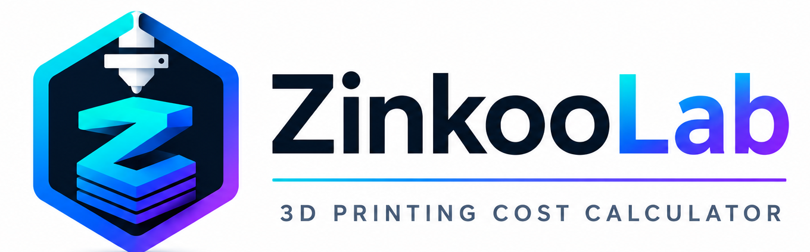

Materiales múltiples, amortización, electricidad, mantenimiento, gastos generales, mano de obra, margen e IVA en una única herramienta clara.
Multiple materials, depreciation, electricity, maintenance, overhead, labour, margin and VAT in one clear tool.

ZinkooLab está pensada para makers que imprimen, venden y necesitan saber qué cuesta realmente cada pieza.
ZinkooLab is designed for makers who print, sell and need to know the real cost of every part.
Añade distintos materiales, precios y gramos dentro del mismo proyecto multicolor.
Add different materials, prices and weights to the same multicolour project.
Incluye amortización, mantenimiento, potencia y horas productivas de cada máquina.
Includes depreciation, maintenance, power and productive hours for every machine.
Reparte gastos generales y calcula precio final, beneficio e IVA sin perder el control.
Distribute overhead and calculate final price, profit and VAT without losing control.
Divide el coste completo de la placa entre las piezas reales producidas.
Divide the full build-plate cost by the actual number of produced parts.
Guarda impresoras, materiales y empresas para no introducir lo mismo dos veces.
Save printers, materials and businesses so you never enter the same data twice.
Sin cuentas, anuncios ni seguimiento. Tus datos permanecen en tu dispositivo.
No accounts, ads or tracking. Your data stays on your device.
La primera versión de ZinkooLab se publicará gratis para aprender de la comunidad de impresión 3D y mejorar sobre necesidades reales.
The first version of ZinkooLab will be free so we can learn from the 3D printing community and improve around real needs.